Passionate students from the Stanford Neurodiversity Project building a more inclusive world for kids.
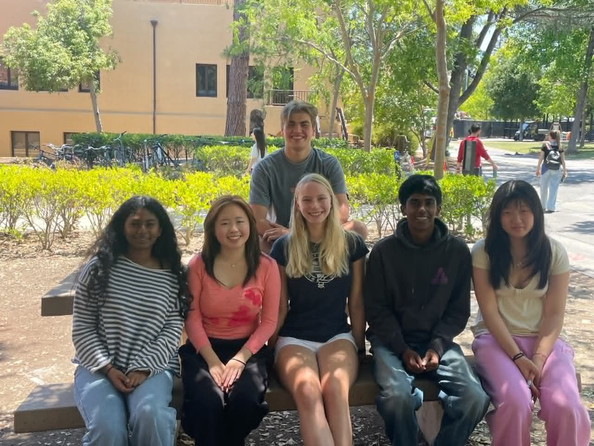
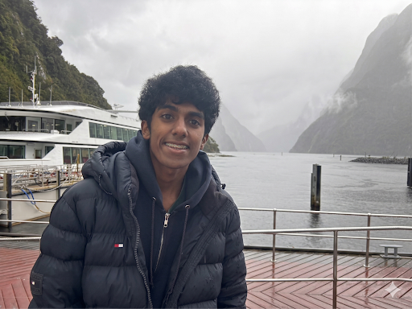
Gautham Ramkumar is a youth advocate and researcher specializing in neuro-inclusive education and community accessibility. As a student at Mission San Jose High School, he serves as a Kindness Ambassador for the Magical Bridge Foundation and is a co-founder of Cocoon Corner, where he works to integrate neurodiversity education into public schools. His diverse advocacy portfolio includes work at NeuroGuidance and affordable housing initiatives for Rebuild the Bay, as well as collaborations with the Stanford Neurodiversity Project and Friends of Children with Special Needs (FCSN). Outside of his advocacy work, Gautham enjoys backpacking, walking his dog Suki, and studying Biology.
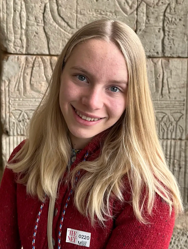
Tallulah is a rising junior at Castilleja High School, and this is her fifth year engaging in neurodiversity advocacy. At Cocoon Corner, she has written several children's books and is so excited to watch the team expand and take on new projects. Outside of advocacy work, she loves to run and spend time with her friends.
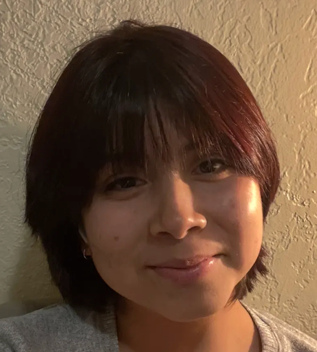
Camila is a co-founder and has served as the lead illustrator for Clover the Caterpillar. She loves exploring all kinds of art in her free time.
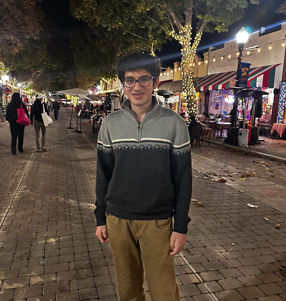
Veer Mahajan, a Bay Area high schooler, developed an interest in neurodiversity through tutoring. Engaging with hundreds of students globally through Schoolhouse and SMOA, he deeply values the unique perspectives neurodiversity brings. At school, Veer serves as Co-President of the peer tutoring organization STEM Success and leads the Predictive Modeling and AI Clubs. He also enjoys competition math, learning languages, and playing badminton.
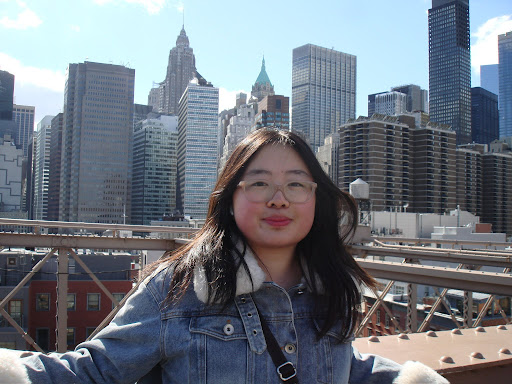
My name is Scarlett Huang, and I'm a rising senior at Mission San Jose High School. I recently joined Cocoon Corner in hopes that my work will help increase awareness and inclusion for student communities everywhere. Beyond Cocoon Corner, I'm also a journalist and published creative writer who loves all things art-related.
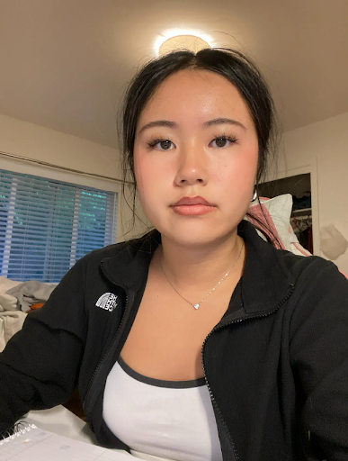
Hi I'm Oriana! I'm currently a junior at Miramonte High School. I am a part of the social media outreach and creative design team. Outside of school and work, I enjoy going on walks and listening to music.
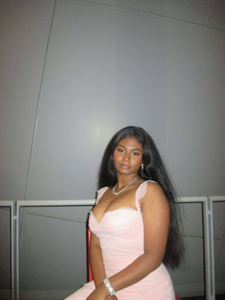
Amritha is a high school student with interests in community service, healthcare advocacy, and art. She is passionate about helping others, supporting her community, and exploring creative expression through artistic work. Through her involvement in service and advocacy, she hopes to make a positive impact in the healthcare industry
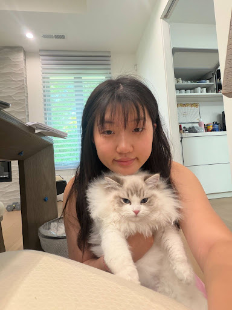
Isabella is deeply committed to advancing UDL (universal design for learning) and integrating inclusive teaching practices into modern education through art and design. Her interests include neuroscience, product design, and chemistry. She aims to develop tools and curricula that honor diverse learning styles and foster equitable opportunities for all students.
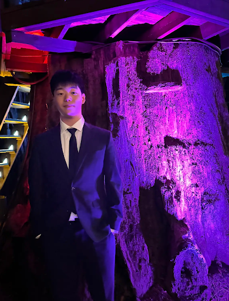
Hi, my name is Joseph. I am from the Bay Area, a high school grad heading to college to study Cognitive Science. Passionate about community impact, books, water polo, and exploring new places.
Ivy Le is a rising senior at John F Kennedy High School in Colorado. She joined Cocoon Corner to raise awareness about neurodivergence and make an impact. Outside of Cocoon Corner, she enjoys playing volleyball and reading books.
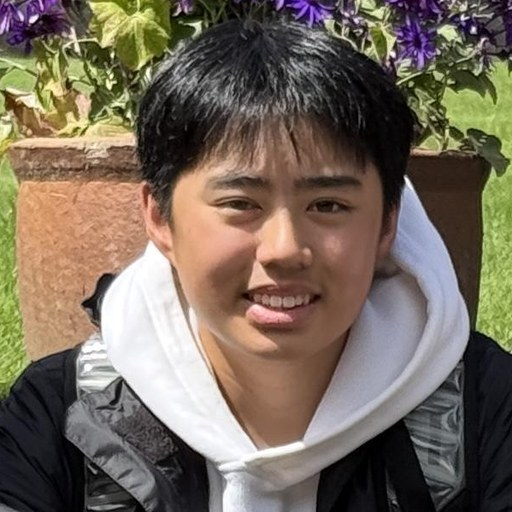
Dylan is a rising sophomore at Mission San Jose High School in Fremont who is passionate about golf, basketball, music, and technology. He enjoys challenging himself, building new skills, and becoming more disciplined both academically and personally. Dylan is also interested in business, nature, and getting to know new people. In his free time, he plays sports, listens to music, plays piano, and explores creative new ideas involving websites and entrepreneurship.
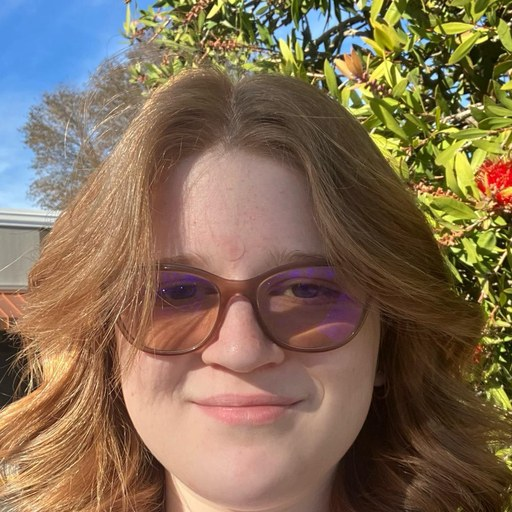
Lotem Zilberstein is a high school junior who is deeply passionate about inclusivity and neurodiversity awareness. Her personal connection to neurodiversity led her to join the Cocoon Corner team, where she hopes to make a positive impact on the next generation through expertly designed school curricula. Outside of school and her advocacy, Lotem enjoys drawing, listening to music, and volunteering at her local cat cafe.
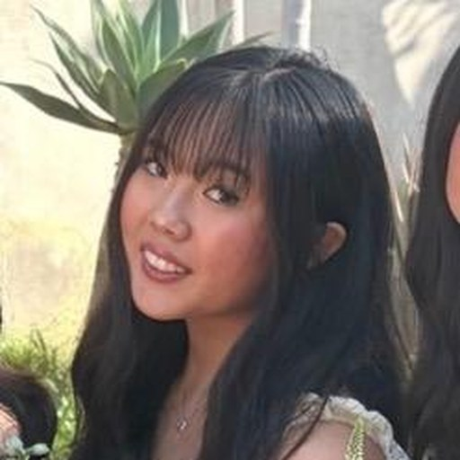
Chloe is a rising senior at Palos Verdes High School. She developed a deep passion for neurodiversity by working with children with special needs for two summers and volunteering at a helpline, where she has spoken with many neurodivergent individuals across California. She hopes to further educate children about this topic and allow inclusion for all neurodiverse kids everywhere.
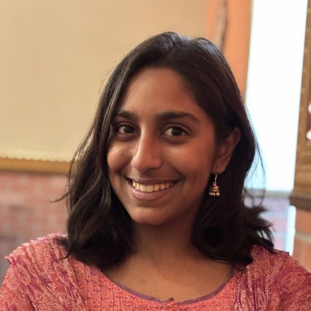
Vedanshi is a rising junior at Saratoga High School with a passion for neuroscience, biochemistry, and medicine. Inspired by her personal experiences in medicine, she enjoys exploring topics related to the brain, psychology, and improving patient care. Outside of academics, Vedanshi loves writing, reading, and playing badminton. She hopes to pursue a career as a physician-scientist, combining research and medicine to make a meaningful impact on patients’ lives.